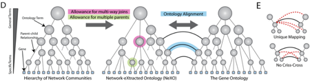
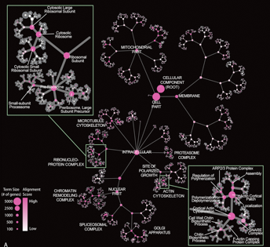
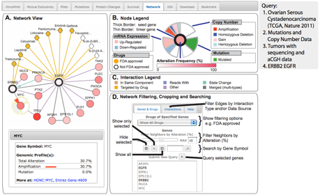
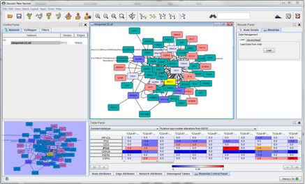
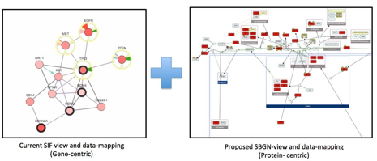

We are conducting an aggressive development program centered on Technology and Research Development projects (TRDs) that will extend the Cytoscape infrastructure to make it significantly more useful to researchers.
A Gene Ontology Extracted from Molecular Networks (Trey Ideker, UCSD):
Ontologies are of key importance to many domains of biological research. The Gene Ontology (GO),
in particular, has been instrumental in unifying knowledge about biological processes,
cellular components, and molecular functions through a hierarchy of concepts and their
interrelationships. However, given only partial biological knowledge and inconsistency in how
this knowledge is curated, it has been difficult to construct, extend and validate GO in an
unbiased manner. We have recently showed that the existing collection of high-throughput
network maps, as are now becoming available, can be analyzed to automatically assemble an
ontology of gene function that rivals manually curated efforts [Dutkowski et al. Nat Biotechnol,
2013 2013. 31(1): p. 38-45]. Our systematic computational approach (Fig. 1) combines evidence from
physical, genetic and transcriptional networks to produce an ontology comprised of 4,123 biological
concepts and 5,766 hierarchical concept relations (Fig. 2). Using a new ontology alignment procedure
(Fig. 1), we found that the network-based ontology captures the majority of known cellular components
and identifies approximately 600 new cellular components and component relations – many of which we
were able to validate either experimentally or bioinformatically. By working closely with the GO curators,
we were able to incorporate selected new components and relations into the Gene Ontology, thus providing
proof-of-principle for how to systematically update and revise the GO structure based on large-scale data.
The network-extracted ontology is a new resource for systems and synthetic biology – i.e. a data-driven catalogue of cellular machinery, from genes, to complexes, to pathways and higher-order processes. It provides a powerful tool for performing multi-scale analysis of biological networks, including automatically identifying, annotating and visualizing the complete hierarchical structure. We also show how integrating the ontology with additional high-throughput datasets leads to identification of new components and processes altered in human disease. Based on our results, we suggest a new role for ontologies in bioinformatics: rather than merely being used as a gold-standard for performing functional enrichment, ontologies should serve as evolvable models that are validated, revised, and expanded based on new genomic data.
Moving forward, it will be interesting to see how the network-extracted ontology can further be extended.
For instance while NeXO represents a rigorous approach to capture ontology terms and term relations, the
ability to systematically annotate the type of relation that occurs between terms (e.g. “is a”, “part of”,
“regulates”) poses a separate and very interesting challenge. An in-depth investigation is needed to assess
which network properties are best at separating the different types of relations, and whether there are
additional data sets that might be brought to bear on this problem (Stage 3). Similarly, while NeXO
identifies the majority of known cellular components, it will be interesting to further investigate
what types of network data could be used to increase the coverage of biological processes and molecular
functions. Finally, a key question is whether enough high-quality data exist to build NeXO ontologies for
other species, particularly human, and, whether it is better to structure a common ontology for all species,
as has been done in GO, or to focus on individual species-specific ontologies.

Figure 1: Automated assembly and alignment of gene ontologies. (A) Probabilistic community detection within
the input networks yields a binary tree in which nodes correspond to ontology terms and links correspond to
parent-child term relations. Unsupported terms are replaced by multi-way joins, and additional parent-child
relations are added based on network data. The resulting ontology is aligned against the Gene Ontology,
in a way that (B) prohibits non-unique mappings and ancestor-descendant criss-crossing.

Figure 2:
The NeXO ontology is shown as a tree, with nodes indicating terms and edges indicating hierarchical
relations between terms, i.e. that one term contains another. Node sizes indicate the number of genes assigned
to a term. Node colors represent the degree of correspon-dence to a term in GO as determined by ontology alignment,
with high-level alignments labeled. Insets show the hierarchy identified for the ribosome and actin cytoskeleton.
Network Analysis Tools for Cancer Genomics (Chris Sander, MSKCC):
This project is focused on building
network analysis tools for interpreting high-throughput cancer genomic data sets to identify altered disease
networks and enable the identification of network-based biomarkers in cancer. Our primary focus is building
user-friendly, open source tools for visualizing and analyzing multidimensional cancer genomic data sets
(including copy number, mutation, and mRNA expression) in the context of known biological pathways and
interaction networks, and making these tools broadly available to clinical, experimental and computational
investigators within the cancer research community. Providing such tools to the cancer research community
is critical, as numerous large-scale projects, including the Cancer Genome Atlas (TCGA) project and the
International Cancer Genome Consortium (ICGC), are profiling dozens of cancer types and subtypes. Identifying
altered pathways and networks within each of these cancer types remains a critical and open challenge.
During our first several years of NRNB funding, we completed a prototype project for displaying multi-dimensional cancer genomic data in the context of molecular interaction networks. We chose to implement the prototype in CytoscapeWeb [1], as CytoscapeWeb does not require any additional software installation or require Java Web Start. It therefore significantly lowers the barriers for usage, particularly for biologists and clinical researchers - two of our main target user groups. We transitioned our tools from prototype to production mode, and have made our software available to the entire cancer research community. Cancer researchers are now using these tools to perform network analysis on up to 20 different cancer types, including TCGA-funded projects, such as glioblastoma multiforme (GBM) [2] and serous ovarian cancer [3].
The cBioPortal for Cancer Genomics code base has recently reached a stable state where it is now being considered as a general framework to build our other NRNB-related tools on. Our recently finalized drug-target data support in the context of cBioPortal’s network analysis is one such example. During the past year, we improved the network analysis capabilities of the cBioPortal by providing query and visualization of aggregated drug data from multiple resources. With this new feature, the portal currently contains gene-centric drug-target information from the following resources: DrugBank [8], KEGG Drug [9], NCI Cancer Drugs, and Rask-Andersen et al. [10]. Within the network analysis view, drugs are hidden by default, but can be added to the network via the Genes & Drugs menu on the right side of the screen. Users now have the option of displaying FDA-approved drugs, cancer drugs defined by NCI Cancer Drugs, or all drugs targeting the query genes. For example, when the user queries for the gene EGFR in the portal, we not only show the network context of this gene, but also provide information about the drugs targeting the product of this gene: gefitinib and erlotinib are tyrosine kinase inhibitors that target the catalytic domain of EGFR, and cetuximab and trastuzumab are monoclonal antibodies that target the extracellular domain of EGFR and ERBB2, respectively (Fig. 3) [11].
Our new drug-target feature is now available as part of the open-access cBioPortal and is helping cancer researchers in exploring the therapy options within the network context of genes of interest.
New Driving Biological Projects: In the next year, we are anticipating improving the network analysis feature in two ways: 1) detailed visualization of the pathways and reactions in the network view; 2) inference of indirect drug targets, for potentially interesting therapy options, by using genomic alteration and drug-target data. Currently, interaction types that are shown in the network analysis view are derived from the BioPAX to SIF inference rules [7]. For example: In Same Component indicates that Genes A and B are involved in the same biological component, such as a complex; State Change indicates that Gene A causes a state change, such as a phosphorylation change within Gene B. This reduction from BioPAX to SIF was necessary as the Cytoscape Web framework, by then, was not supporting visualization of more complex elements, such as compartments. With the technology being developed as part of the CSP-100 project (Gary Bader), it recently become feasible to visualize biological networks in a more detailed way, therefore enabling the use of Systems Biology Graphical Notation (SBGN) for better representation of BioPAX. As part of our NRNB collaboration with Ugur Dogrusoz (Bilkent University, Turkey), we are aiming to adopt SBGN-complaint views to visualize multi-dimensional cancer genomics data with the network context (see Figure 4). This project has recently been implemented as a proof-of-concept prototype and is now being integrated into cBioPortal. When complete, this new feature will allow better presentation of proteomics data (e.g. Reverse Phase Protein Array data provided as part of the TCGA network) by allowing users to optionally switch from a gene-centric to protein-centric view.
In the next year, we are also planning to utilize genomic alteration and pathway data to infer clinically relevant uses of drug-target data. For this, we intend to use down- and up-stream relationships between genes to suggest drugs of possible interest that can indirectly target a particular genomic alteration event in cancer samples (see Figure 5). One historical example for such cases is the use of AKT inhibitors in patients who bear a homozygous PTEN deletion. Without the gene PTEN and its product, Akt proteins, which are down-stream of PTEN, cannot be suppressed, and therefore are found to be upregulated in cancer samples that have the homozygous PTEN deletion. In the presence of an AKT inhibitor, this up-regulation effect can be counteracted. Another similar example of this concept is the use of CDK4/6 inhibitors when CDKN2A is either mutated or homozygously deleted in cancer cells. Pathway resources, such as Pathway Commons, already provide this type of relationships between genes; and we plan to extract this information in a systematic way and combine it with the drug-target data in order to infer such therapy options in an automatic manner within the cBioPortal framework. This method and the prototype are currently under development.
Network Analysis Methods for Inferring Causality in Signaling Networks (Sander, MSKCC)
The goal of our second TRD project is to develop network analysis tools that algorithmically infer
causality within signaling networks and make these tools available. High-throughput screens conducted
with libraries of small molecules or inhibitory RNAs have the ability to identify compounds that induce
tumor suppressive responses in cancer cells [12]. While the effects of such perturbations can be easily
linked to transcriptional changes, identifying the causal mechanism is a main challenge. In collaboration
with Somwar and colleagues [13], we used a computational approach to predict the target of a small molecule
inducing reduced growth in lung adenocarcinoma cell lines. Interestingly, experimental follow up confirmed
the prediction.
Building on this concept, we have been working on computational approaches to model causal signaling cascades inducing observed transcriptional changes within perturbed cancer cell lines. We have been exploring the use of optimization algorithms adapted from statistical physics to identify the minimal set of interactions able to connect genes that are differentially expressed after a perturbation, with candidate targets of the same perturbation (Stage 2). This initial approach relied on an algorithm that solves the Steiner-tree problem. Given a set of “terminal” nodes, the Steiner-tree is defined as the tree of minimum weight connecting these terminals, allowing the inclusion of additional nodes. Differentially expressed genes after a perturbation and/or candidate targets of the same perturbation can be used as terminals. Our prediction was that the resulting Steiner-tree could therefore contain both gene interactions able to explain the observed transcriptional changes and the putative target of the perturbation. Within this past year, we determined that this approach does not work as well as expected, and are now in the process of exploring a new algorithmic framework that combines Gaussian graphical models with maximum entropy methods.
New Driving Biological Projects
A new biological driver for deriving causality networks
is inferring causal relationships within data types and between data types, such as copy number
changes and cancer genomics. For example, we would like to investigate the relationship between
mutations in the TP53 tumor repressor and the complex copy number profile in ovarian cancer. Another
example is the exploration of causal relationships between gene mutations. For example, mutations in
the POLE gene lead to a characteristic spectrum of mutations in other proteins. We have preliminary
results and plan to develop a network analysis approach to identify causal relationships.
We are also considering looking at interactions between microbial subpopulations, starting with the gut microbiome, where a set of interacting bacterial populations change under fluctuating constraints provided by the host and nutrient intake. Recent work has shown the precise composition and evolution of this population is closely coupled to the state of health of the host. Certain deviations from equilibrium present a significant risk of invasion by pathogenic bacteria, as seen with some cancer patients receiving bone marrow transplantations [23]. A more detailed understanding of the relationships between gut microbial subpopulations following such aggressive treatments in the host could inform therapeutic development leading to improved outcomes.
Social networks are increasingly recognized as having an important effect on a wide variety of human behaviors, affecting the spread of health outcomes (AIDS, obesity, drinking and smoking behavior), emotional states (depression, loneliness, and happiness), and political outcomes (legislative activity, judicial decisions, and terrorist events). However, the statistical tools used to study these effects are drawn from a tradition that focuses on dyads, or sets of two people who are socially connected. When we find an association in behavior within dyads, we typically cannot distinguish three possible explanations. 1) Homophily: people might choose to be friends with others because they have the same behavior. In other words, birds of a feather might flock together. 2) Context: there might be variation in the environment than causes both individuals in a dyad to exhibit the same behavior. For example, poor neighborhoods might create environments that promote less healthy behaviors, causing an association between friends who live in the same neighborhood. 3) Influence: one person in the dyad actually influences the other in some way to cause their behavior to become more like their own.
We are developing a Network Correlation Cytoscape App in collaboration Dr. Alex Pico. In order to understand why so many behaviors are influenced by social connections, a tool must be developed that is able to determine the variable contribution of a given set of potential causes (such as homophily, context, and influence effects). This technology can then be used to determine the underlying causes behind the spread of various behaviors (health, political, emotional) in networks of different types and across different time points. The emerging techniques and tools will be broadly applicable to the study of social network influence on health behaviors such as eating habits, alcohol consumption, and drug use.


Biologists frequently use networks to represent the structure and function of the cell, using intuitive metaphors to reduce multiple levels of spatial and temporal relationships to a two-dimensional image. At the same time, computational representations of the cell are more abstract and tend to be less intuitive for biologists than human-made diagrams. This section describes planned improvements to the biological relevance of computational visualizations of biological networks in Cytoscape. Intuitive biological network visualizations may one day replace printed biology textbooks as the primary resource for knowledge about cellular processes.
Imagine being able to view the entire network of genes and gene products working in a cell. Then freeze the cell at a moment in time, and zoom to visualize the location, state, and interconnections of a collection of molecules in a particular subcellular location. Zoom in further to identify the splice isoforms and variants resulting from that particular genome being processed in that tissue, at that time, under specific conditions. We are a long way from such an ideal cellular exploration system. Instead, biological systems are typically visualized as "ball and stick" networks that include only pairwise connections between nodes. This representation has many limitations, such as the inability to convey detailed knowledge about biological processes and their dynamics (e.g. biochemical reactions which are three-way relationships between metabolic substrates, products, and enzymes) and poor visualization of very large numbers of nodes and links as are present in the cell (e.g. resulting in visual "hairballs").
To overcome these challenges, we are develop new methods for visualizing and exploring very large biological networks that reduce visual complexity and enhance cognitive value compared to the traditional network display. These approaches will exploit the hierarchical and modular organization of biological networks and the large amount of information available about nodes and edges, such as Gene Ontology annotations of gene function. We are developing visualization methods in the following areas:
Researchers need tools to not only aid in the collection and processing of large-scale datasets, but also to make sense of the data in the familiar context of biological pathways. The visualization methods that we will develop will enable a view of the cell that is intuitive to biologists and that leads them quickly to new discoveries - where a researcher exclaims "Aha! Now I understand the relationships in my data and can formulate a new hypothesis!" as a result of exploring a network in Cytoscape.


The objectives of this TRD are to (1) Create 'fill-in-the-algorithm' infrastructure for network inference and (2) Make methods accessible to biologists within the Cytoscape framework. Our approach is to create a software infrastructure (CYNI) for network inference algorithms.
The Cyni Toolbox app is available from the Cytoscape App Store (link) and is also available here (http://www.proteomics.fr/Sysbio/CyniProject). Data imputation and discretization techniques are provided along with several known inference algorithms to make this tool fully operational for any kind of inference requirement. While data imputation and discretization techniques allow you modify Cytoscape tables, network inference algorithms produce a new network after applying the chosen technique.
Cyni Toolbox is not only an application to perform a result, but it also provides a framework for other app developers to facilitate the implementation of other algorithms. The goal of the Cyni framework is to provide standardized, extensible and configurable default solutions for all components different from the core algorithms, such as GUI, parameter handling, and configuration of distance/similarity measures. Thereby, developers can focus on their core expertise. Tutorials are available for Cyni Toolbox users as well as for developing new algorithms through Cyni.